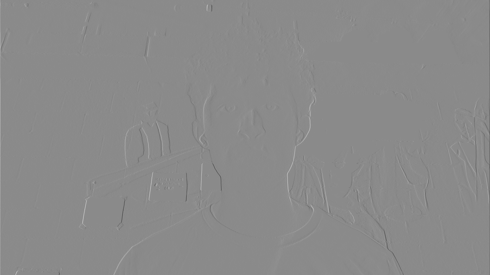
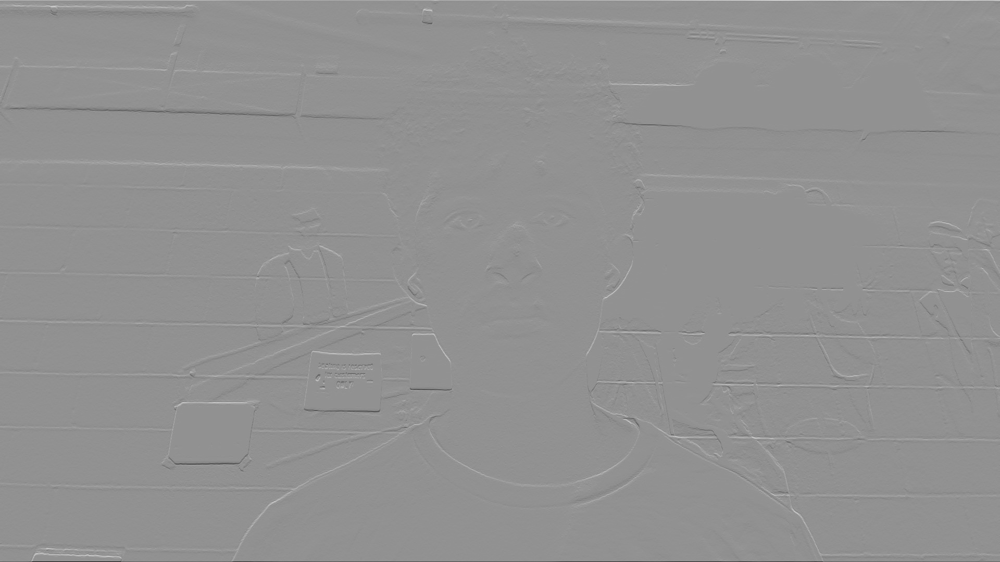

Part 1.1: Convolutions From Scratch!
Please find the code for convolution with 4 for loops, convolution with 2 for loops, and the runtime for those two functions as well as the scipy convolve2d function.
# Four for loops
def conv4(image, kernel):
H, W = image.shape
kH, kW = kernel.shape
pad_h, pad_w = kH // 2, kW // 2
image = np.pad(image, (pad_h, pad_w))
out = np.zeros((H, W))
for i in range(H):
for j in range(W):
for m in range(kH):
for n in range(kW):
out[i, j] += kernel[m, n] * image[i + m, j + n]
return out
# Two for loops
def conv2(image, kernel):
H, W = image.shape
kH, kW = kernel.shape
pad_h, pad_w = kH // 2, kW // 2
image = np.pad(image, (pad_h, pad_w))
out = np.zeros((H, W))
for i in range(H):
for j in range(W):
filter = image[i:i+kH, j:j+kW]
out[i, j] = np.sum(filter * kernel)
return out
# Four for loop runtime: 0.1573 seconds
# Two for loop runtime: 0.0492 seconds
# Convolve2D runtime: 0.0010 seconds
We use padding to handle boundaries in the same manner for all three convolution implementations. This padding applies (kernel dimension / 2) layers of zeros around the image. This causes the kernel to “see” less neighbors for the edge pixels, weighting the result for those pixels towards lower-value, darker pixels.
Please find all the relevant images for this part below.



